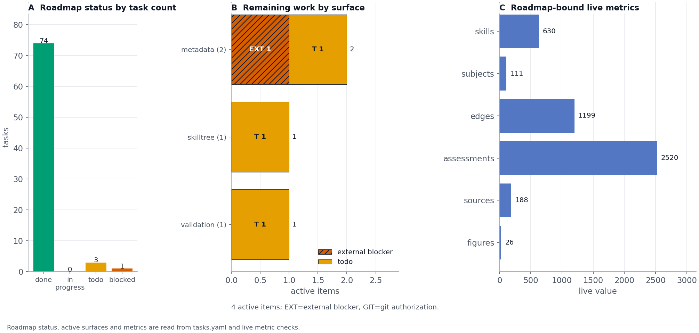

Discussion and Conclusion: What the Artifact Establishes—and What It Does Not
Principal findings: a claim-calibrated curriculum artifact
Active Skillference establishes a bounded engineering result: a contested formal subject can be represented as an inspectable prerequisite graph whose structural, quantitative, scholarly, and delivery contracts are checked separately. The curriculum graph is a validated DAG; learner-facing computed values are resolved from tested kernels; citations are assigned source roles; and generated figures, manuscript references, and SkillTree payloads are audited as connected artifacts. These are properties of this checkout and its build process, not evidence that the selected order is optimal for every learner or that the underlying scientific framework is empirically confirmed.
Interpretation: infrastructure rather than intelligence or personalization
The mathematical examples and the curriculum infrastructure operate at different levels. The kernels implement small, model-dependent demonstrations of inference and policy evaluation. The curriculum layer orders and assesses concepts. The provenance layer records how values and sources enter the learner-facing artifact. None of these layers is an intelligent tutor, a general-purpose reasoning system, or an adaptive learner model. In particular, the term agent in the mathematical examples refers to a formal model with specified states, observations, preferences, and policies; it should not be read as a claim about consciousness, general intelligence, autonomy, or human-like learning.
The related-work literature supports this separation. Active Inference formulations can connect belief updating, action selection, learning, and epistemic behavior, but their predictions depend on the generative model, preferences, approximation, and policy set [rao1999predictive; friston2013life; ramstead2018answering; friston2019particular]. The supplement therefore keeps the VFE/EFE derivations, sign conventions, and preference assumptions visible instead of treating one computed policy comparison as a universal account of intelligent behavior. Learner-state models such as knowledge tracing and Q-matrix cognitive diagnosis belong to a separate adaptive-learning evidence layer and are cited here as comparison boundaries, not as components of this artifact [piech2015deep_knowledge_tracing; tao2024q_matrix_constraint].
Implications: future adaptive learning systems and open-science interoperability
The delivery contract is useful precisely because it does not hide ownership boundaries. The exporter creates a SkillTree-compatible Project -> Subject -> Skill profile with learning-path dependencies and quiz associations. The local dashboard exposes generated artifacts and opens official subject and quiz routes, while SkillTree remains the owner of progress, ranking, scoring, completion, and authentication. This makes the repository a candidate foundation for a later adaptive study, not an adaptive system in the present release.
A genuinely adaptive extension would require learner response data, a validated model of learner state, a transparent rule for selecting the next skill, item-level measurement, privacy and consent controls, and prospective evaluation against a preregistered comparator [doignon1985knowledge_spaces; fu2025curriculum_aware_gncd; designbasedresearchcollective2003; liu2023_learning_analytics_privacy; piech2015deep_knowledge_tracing; tao2024q_matrix_constraint]. Knowledge tracing and Q-matrix cognitive diagnosis are comparison literatures for those stronger commitments, not components of the present export. Provenance and graph validation would remain necessary infrastructure, but they would not by themselves establish personalization quality or learning effectiveness.
The community contribution should be read at the same bounded level. The Active Inference Institute’s public website repository presents a public resource hub for learning, research, participation, and contribution, with public repositories and a documented boundary between internal inputs and verified public projections [activeinferenceinstitute2026website]. Active Skillference contributes a complementary artifact to that open-science environment: it packages a prerequisite graph, kernel-backed examples, source-role audit, and SkillTree handoff into a rerunnable educational release. The relationship is interoperable and community-facing, not institutional: this repository does not claim to be an Institute product, an official curriculum, or an endorsement of any contributor or public pathway.
Limitations and planned empirical evaluation
The release state is machine-readable. As of 2026-07-31,
tasks.yaml records 78 roadmap tasks: 74 completed
milestones and 4 open items across metadata, skilltree, validation.
TODO.md is rendered from the same source. [@fig:roadmap_risk] shows the
current distribution of open versus completed work by surface and
release class, keeping release-readiness language tied to the validator
state that drives the roadmap.

tasks.yaml and the live metrics stored in
the roadmap source data. The first panel counts roadmap items by status,
the middle panel groups remaining open or blocked work by surface and
release class with direct EXT/GIT segment labels, hatching, and surface
totals, and the final panel reports current curriculum, assessment,
scholarship, and figure metrics. The figure separates external blockers
from git-authorization hygiene using machine-readable roadmap data, so
release-readiness text must agree with the same source.The limitations are therefore substantive rather than cosmetic. The kernels cover fixed, small discrete teaching cases and bounded predictive-coding or planning demonstrations; their conclusions depend on the stated model, preferences, inputs, and approximation regime. The runtime depends on SkillTree for live progress and quiz state, and this release contains no learner-response data, learner-state inference, retention measure, transfer measure, efficacy estimate, or differential-benefit analysis. The planned pilot described in [@sec:evaluation-setup-deterministic-tests-learner-study] and the fuller boundary analysis in [@sec:limitations-delivery-dependencies-learner-outcomes] define the evidence needed before those claims can be made.
Conclusion: a bounded, reproducible contribution
The strongest conclusion is narrower and more useful: Active Skillference makes the construction, provenance, and delivery of a formal Active Inference curriculum more inspectable, reproducible, and auditable. It establishes an infrastructure artifact and an open-science-compatible handoff surface; it does not establish intelligent tutoring, personalization, learner improvement, or empirical confirmation of the Free Energy Principle.